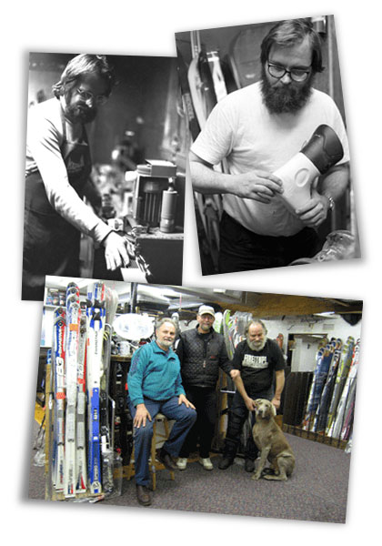

Opened in 1934, Strand’s Ski Shop is Worcester County’s finest full service ski shop offering a huge selection of ski and snowboard equipment and accessories, ski apparel, helmets, boots, bindings, travel racks, dryers and more. Not in the market for new equipment? Strand’s has a wide selection of used skis, boots, snowboards and other equipment. We also offer a variety of services including expert custom boot fitting, tune-ups, binding mounting and a “try before you buy” demo program.
Family-owned and operated, Strand’s Ski Shop was founded by 3-time National Ski Jumping Champion, U.S. Skiing Hall of Fame member and founder of the Eastern Professional Ski Jump Association, Strand Mikkelsen. Mr. Mikkelson operated his shop until his sons, twins Leif and Roy and Paul joined the business. Leif’s expertise is custom boot fitting and much of his time in the shop is dedicated to creating perfectly fit boots for our customers. Roy concentrates on maintaining and tuning-up customer skis relying on skills honed through many years of experience and state-of-the-art computerized system to perfectly prepare our customer’s skis or board.
Strand’s Ski Shop was founded on the simple principle of providing the best value and shopping experience for our customer’s and to make our shop and our experience accessible to everyone, no matter what their level of experience. We stay on top of industry trends, having built a broad network within the skiing industry over the past 50 years, and we strive to have the latest equipment in stock and ready to be enjoyed!
At Strand’s Ski we are proud of our commitment to customer service. We always take the time to listen to our customers and understand exactly what their needs are. We don’t just sell skis, we educate our customers and make sure they get the best value and the proper equipment to ensure the best skiing experience. Over the years we have built long-term relationships with our customers with many bringing in their children and grandchildren to purchase equipment.
We are skiers, so we understand what other skiers are looking for and with hundreds of combined years of experience, rely on the staff at Strand’s Ski to help you when choosing ski equipment.